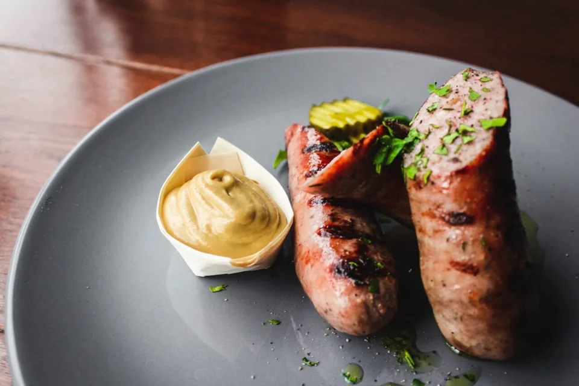

Votre boucherie locale d’Aylmer
Au Marché Laflamme,
nous privilégions la fraîcheur et le service.

- Viande hachée produite en magasin
- Boucher disponible pour coupes personnalisées
- Saucisses maison 100 % canadiennes
- Produits prêts-à-cuire
Notre viande hachée est produite en magasin, et nous produisons également des boulettes de viande fraîche à partir de celle-ci à chaque jour. Elles sont excellentes pour un bon barbecue! De plus, nous avons des bouchers qui sont disponibles pour vous faire des coupes personnalisées. Il suffit d’appeler une journée d’avance afin de vous préparer votre commande.
Notre sélection
Nos saucisses maison.
Préparées à partir de notre porc haché en magasin, 100 % canadien.
- Italienne douce
- Miel et ail
- Toulouse
- Poireaux
- Érable et bleuets sauvages
- Jalapenos et fromage
- Chorizo
- Italienne forte
- Tomates et basilic
- Vin blanc et échalotes
- Bière et fromage
- Taco et fromage
- Bacon et fromage
Pour simplifier les repas
Des produits prêts à cuire.
- Boulettes de bœuf haché fraîchement faites
- Souvlaki
- Brochettes
- Produits marinés
Demandez à l’équipe quels produits prêts à cuire sont offerts en magasin.
Les produits et disponibilités peuvent changer. Consultez la page officielle de la boucherie ou appelez le (819) 684-4156 pour confirmer.
Prototype uniquement : les commandes ne sont pas transmises par ce site. Appelez directement le marché pour vérifier les produits et passer une commande.